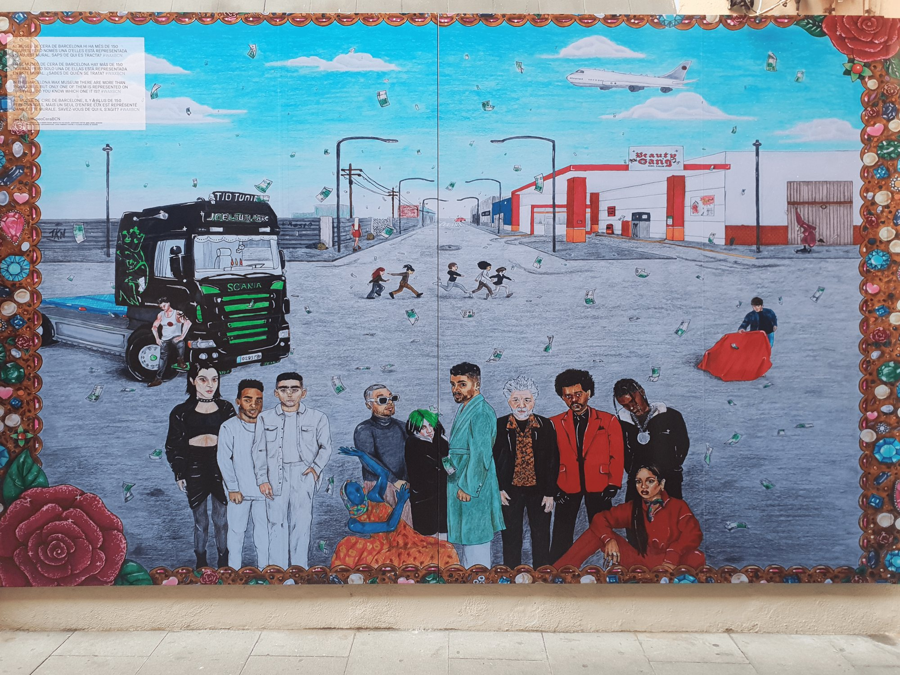
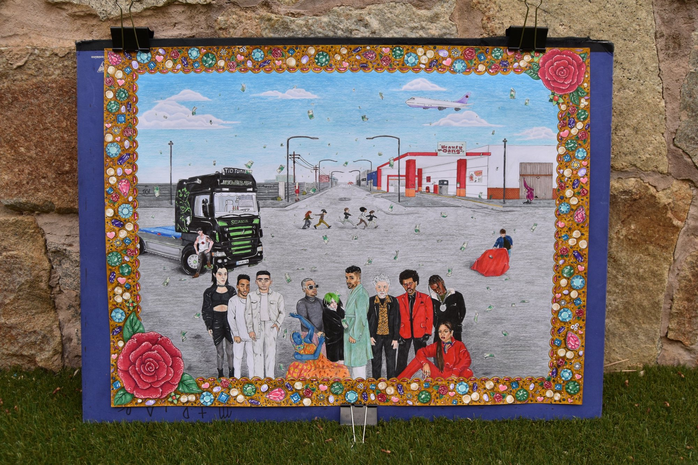

1. Mural para el MCB
Ilustración inspirada en Rosalía para un mural del Museo de Cera de Barcelona (MCB)


Me seleccionaron para participar en un taller organizado por mi universidad junto con el Museo de Cera de Barcelona. En él, cada participante elegía un personaje famoso de entre los expuestos en el museo y creaba un diseño que después se convertiría en un mural de tres metros. Teníamos libertad total, pero debía representar al personaje sin retratarlo de forma literal: la idea era que el mural fuera una especie de acertijo en el que el espectador adivinara de quién se trataba o lo encontrara dentro del dibujo.
Elegí a Rosalía, cantante de Barcelona, no solo porque la admiro, sino porque tiene un imaginario muy potente, lleno de iconografías y elementos que podía representar. Dibujé toda la imagen a mano y, tomando como referencia la pintura renacentista, creé una escena llena de personas que han trabajado con ella y de otros personajes y elementos de sus videoclips. La enmarqué con piedras preciosas y rosas, como sus icónicas uñas y joyas. El objetivo era una escena muy kitsch, llena de detalles sobre ella que el espectador fuera descubriendo mientras la mira. El dibujo original (de unos 100x70 cm) se escaneó y se amplió para la pared donde está expuesto actualmente, frente al museo.
Encargo para el MCB
2022
2022